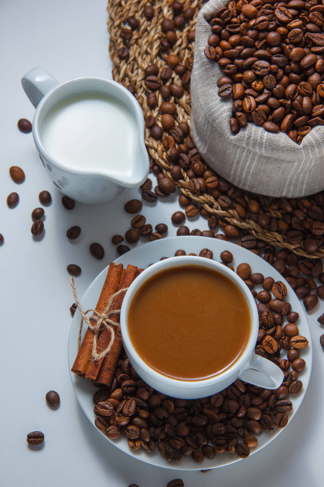
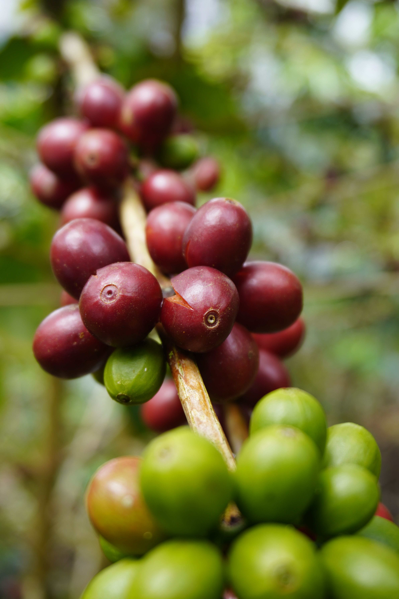
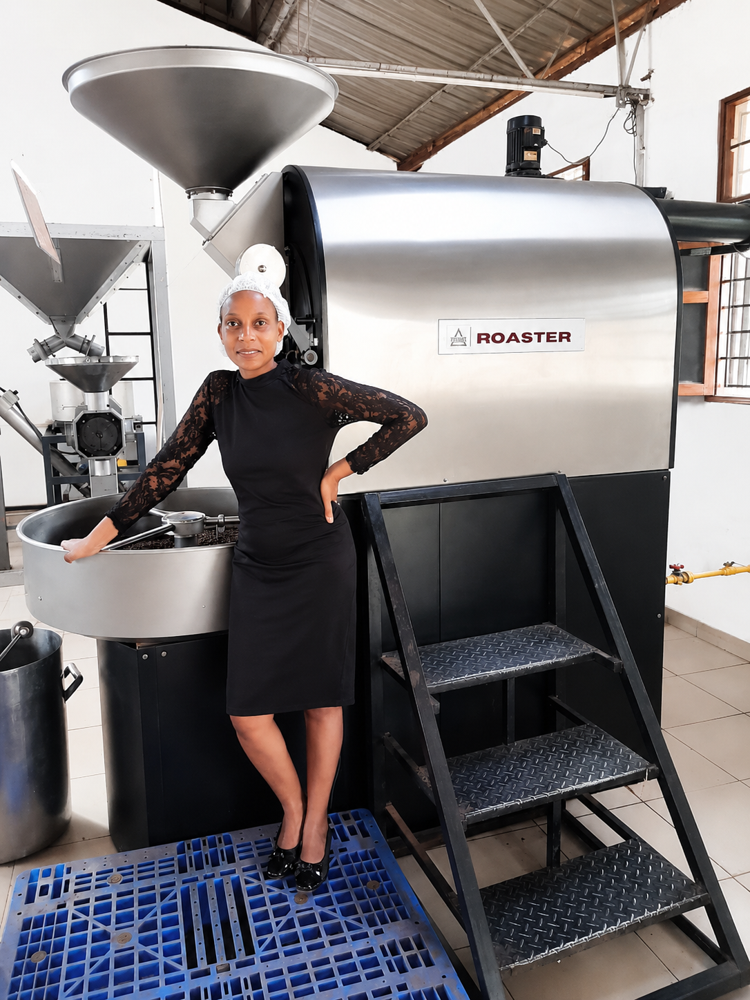
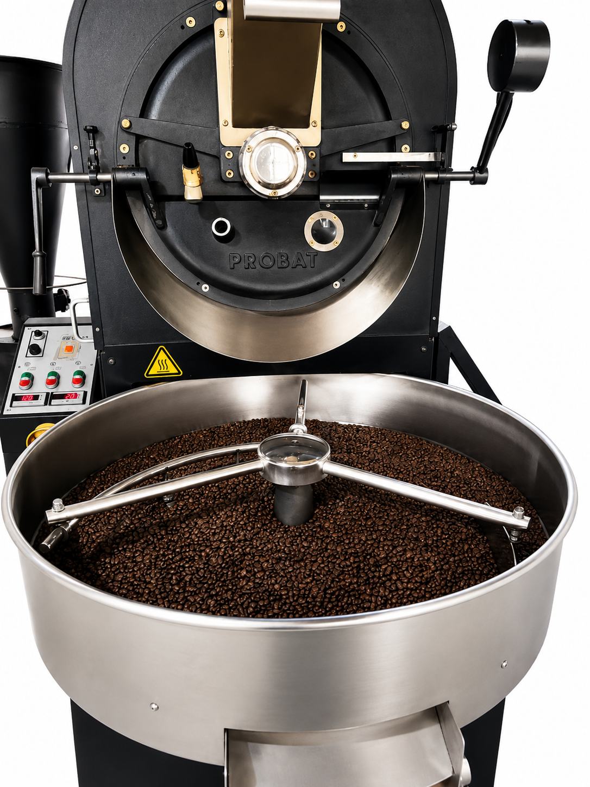

Good coffee starts with people and place.
Nganzi Quality Investments Ltd, trading as Nganzi Coffee, has been growing and processing Arabica and Robusta since December 2020. Our work spans approximately 50 acres of farmland across Mubende and Kibaale districts. Our coffee is grown at Komurubuga Coffee Farm.
“Nganzi” is a Lutooro word meaning “beloved” or “something great.” It reflects our ambition to bring quality Ugandan coffee to more people while creating value for the communities behind every cup.
Nganzi Quality Investments Ltd
African coffee. Connected from origin to cup.
Founded in 2020, Nganzi is a Ugandan-owned agricultural export company connecting premium Arabica and Robusta from Uganda and the Democratic Republic of Congo with coffee partners and consumers around the world.
From farm partnership to every cup.
We connect the whole coffee journey: direct partnerships with smallholder farmers lead into aggregation, careful processing, quality assurance, traceability, and export logistics.
Roasted and packaged coffee carries that same journey forward to cafés, hospitality businesses, retailers, foodservice teams, and everyday drinkers.
-
01
Farmer partnerships
Direct relationships with the people who grow the coffee.
-
02
Careful processing
Aggregation, processing, and quality assurance that protect each harvest.
-
03
Traceable origins
Clear connections between each coffee, its origin, and its journey.
-
04
Ready for the world
Export logistics and value-added coffee for international partners.


Meet thefounder
Founded by Angella Nyakato, Nganzi Coffee is a Ugandan business built on a belief that great coffee can create lasting value. Her vision brings quality, strong partnerships, and opportunity for rural communities together.
From the people who grow the coffee to the partners who share it with the world, Nganzi is working to build a more connected coffee journey from origin to cup.
Get to know Nganzi
When women farmers thrive, communities grow.
Women’s economic empowerment is central to Nganzi’s mission. We employ at least 50 rural women, creating income-generating opportunities that help strengthen livelihoods and support families.
We also work with women as contracted outgrowers and support local farmers with training in coffee cultivation, post-harvest handling, and good agronomic practices. It’s one way we help more people participate in and benefit from the coffee value chain.
Start a conversation
From green bean to roast.
We bring Uganda’s Arabica and Robusta to life in a range of roasts and formats. Every step is an opportunity to honour the people and care behind the coffee.



Good coffee brings us closer.
Discover our roasts or get in touch to learn more about Nganzi.